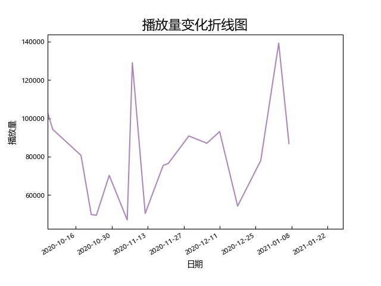

NII4.0(20201005-)（新新恩）

场次：
18（普通场：12）
平均播放量：
80826（所有公演），68761（普通公演）
中位播放量：
79341（所有公演），72842（普通公演）
标准差：
25410（所有公演），17104（普通公演）
播放量前三：
- 20年刘姝贤生诞(139237)
- 20年胡晓慧生诞(129059)
- 新N首演(102919)
播放量变化分析：
新恩靠mc和cp为自己挣来了关注度，11月中旬之后的普通公演播放量大约是之前的1.5倍。作为新新恩最低播放量一场公演的现场观众，不得不说还是很欣慰的。
高播放量公演推荐：
- 20年刘姝贤生诞：表演、pv、cp都很高能，生日环节无可挑剔。来年的事谁知道呢，莫寒来恩队上公演了
- 20年胡晓慧生诞：舞蹈精灵、体力怪物的生诞，拐包的舞台好甜
- 20年青钰雯生诞：小青总当男人真的帅。大哥教你什么叫讲mc
- 201211时之卷：新新恩kymc代表作。舞起来！舞起来！
- 210107时之卷：对朋友变质了该不该说出来？mc3看小怀瑾y(永)y(远)d(单)s(身)，mc4懂自懂
- 201121时之卷：白白打辩论自带笑点，肥兔ttl